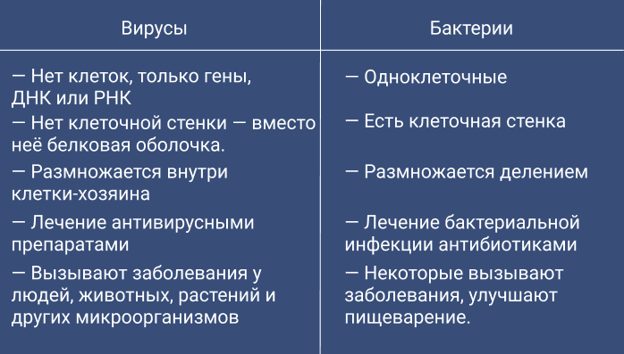

Отличие от бактерий
Бактерии — это живые одноклеточные организмы. Они бывают симбионтными, условно-патогенными и патогенными. Симбионтные бактерии — безвредные, они живут в симбиозе с клетками «хозяина». В кишечнике они помогают в процессе переваривания пищи, в выработке витаминов и защите от кишечных инфекций. На коже, в ротовой полости и во влагалище такие бактерии подавляют рост болезнетворных микробов.
Условно-патогенные бактерии в определенных условиях вызывают болезни. Например, стафилококки находятся на коже и не причиняют вреда, но если снизился иммунитет, они активизируются и вызывают воспаление волосяного фолликула — фурункул.
Патогенные бактерии при попадании в организм вызывают инфекции, например туберкулез, сифилис, бактериальную ангину. Однако заболевания вызывают лишь менее 1 % бактерий.
Бактериальные инфекции лечат антибиотиками — они разрушают клеточную стенку бактерии и нарушают метаболизм клеток, в результате бактерии погибают. Этот метод работает против кишечной палочки, стрептококков, стафилококков, сальмонелл и др.
Вирусы — неклеточные формы. Они состоят из генетического материала — ДНК или РНК — и защитной белковой оболочки. Вирусы подобны паразитам, не выживают самостоятельно, поэтому используют чужие клетки для размножения и синтеза.
Белковая оболочка вируса прикрепляется к мембране чужой клетки, чаще определенного вида. Например, вирус гриппа прикрепляется к эпителию слизистых оболочек, простого герпеса — к нервной ткани, а иммунодефицита человека — к иммунным клеткам.
Вирус проникает в клетку, высвобождает ДНК или РНК. Затем увеличивается количество копий генетического материала, образуются новые вирусные частицы и вирус выходит из клетки. Также вирусы имеют собственный набор генов и эволюционируют путем естественного отбора.
Вирусные инфекции не лечат антибактериальными препаратами, поскольку у них нет клеточных структур, на которые бы могли подействовать антибиотики. Для лечения вирусных инфекций используют вакцины и противовирусные препараты. Вакцины создают искусственный иммунитет, для этого вводят ослабленные штаммы, которые вызывают иммунный ответ организма. Противовирусные препараты действуют двумя способами — стимулируют иммунную систему на атаку вирусов или атакуют вирусы напрямую.
Примеры вирусов: вирусы гриппа, иммунодефицита человека, гепатитов А и С, штамм SARS-CoV-2, вызывающий COVID-19.
Таким образом, различия между бактерией и вирусом выглядят следующим образом.
